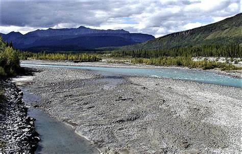
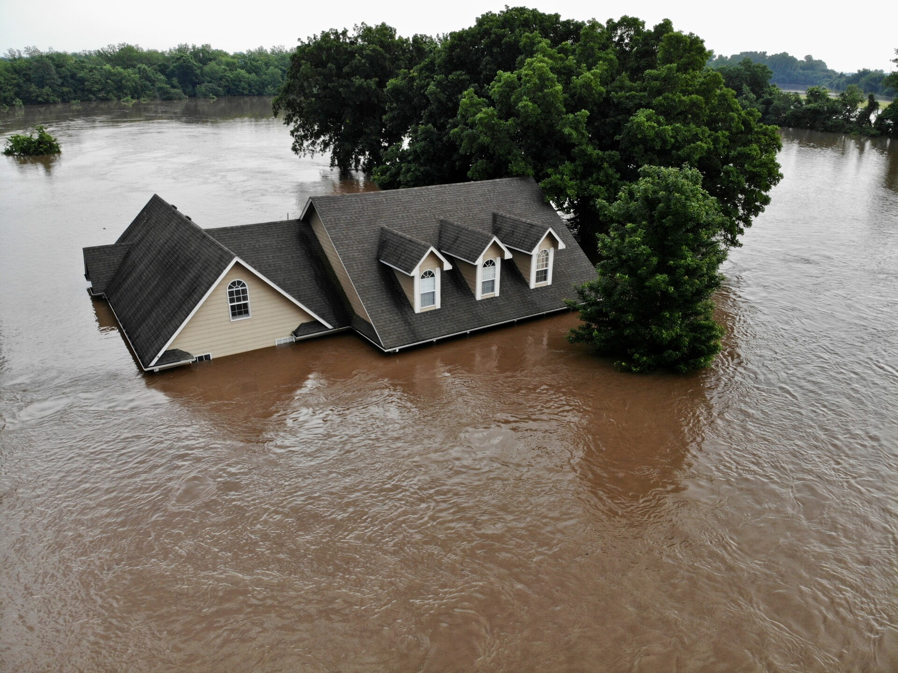
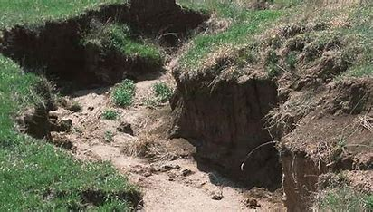
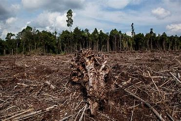
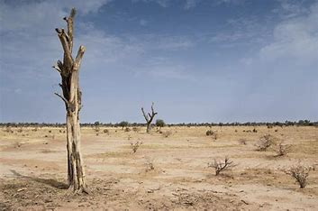
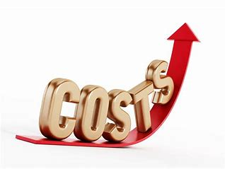
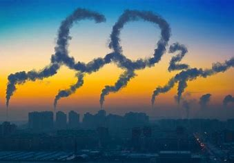

Environmental Effects:
-

Sedimentation: Eroded soil can be carried into rivers, lakes, and oceans, leading to sedimentation. This reduces water quality, harms aquatic life, and can clog waterways. -
 Water Pollution: Eroded soil often carries pollutants like pesticides and fertilizers into water bodies, causing water pollution.
Water Pollution: Eroded soil often carries pollutants like pesticides and fertilizers into water bodies, causing water pollution. -

Flooding: Increased sedimentation in rivers can lead to more frequent and severe flooding, affecting both the environment and nearby communities. -

Landscape Alteration: Soil erosion can create gullies and change landscapes, making land less usable and aesthetically altering the environment.
Ecosystem Effects:
-

Habitat Disruption: Erosion can destroy or alter natural habitats, displacing plants and animals. -
 Biodiversity Loss: Disrupted ecosystems can lead to a decline in biodiversity as species struggle to adapt to changing conditions.
Biodiversity Loss: Disrupted ecosystems can lead to a decline in biodiversity as species struggle to adapt to changing conditions. -
 Water Body Impact: Erosion affects aquatic ecosystems, harming fish and other aquatic life due to sedimentation and water pollution.
Water Body Impact: Erosion affects aquatic ecosystems, harming fish and other aquatic life due to sedimentation and water pollution. -

Desertification: Severe erosion can contribute to the spread of deserts, displacing communities and causing loss of arable land.
Economic Effects:
-

Increased Costs: Soil erosion can lead to increased costs for soil conservation practices, irrigation, and fertilizers. - Reduced Income: Farmers may experience reduced income due to lower crop yields and the need for costly mitigation measures.
Climate Change:
-

Carbon Emissions: Soil erosion can lead to the exposure and loss of the topsoil, which is rich in organic matter. When this organic matter is eroded and exposed to the elements, it can decompose and release carbon dioxide (CO2) into the atmosphere. CO2 is a greenhouse gas that contributes to the greenhouse effect and global warming, leading to climate change. -
 Reduced Carbon Sequestration: Healthy soils act as carbon sinks, sequestering carbon from the atmosphere.
Soil erosion can diminish the soil's capacity to store carbon, reducing its effectiveness as a carbon sink and allowing more CO2 to remain in the atmosphere.
Reduced Carbon Sequestration: Healthy soils act as carbon sinks, sequestering carbon from the atmosphere.
Soil erosion can diminish the soil's capacity to store carbon, reducing its effectiveness as a carbon sink and allowing more CO2 to remain in the atmosphere. -
 Altered Microclimates: Erosion can change the microclimates of specific areas by removing vegetation cover and altering the landscape.
This can affect local weather patterns, temperature, humidity, and wind patterns.
Changes in microclimates can have broader implications for regional and even global climate.
Altered Microclimates: Erosion can change the microclimates of specific areas by removing vegetation cover and altering the landscape.
This can affect local weather patterns, temperature, humidity, and wind patterns.
Changes in microclimates can have broader implications for regional and even global climate. -
 Impact on Vegetation: Soil erosion can damage or displace vegetation, reducing the capacity of ecosystems to regulate temperature, water cycles, and carbon cycling.
Healthy ecosystems, with intact vegetation, play a critical role in maintaining climate stability by regulating these processes.
Impact on Vegetation: Soil erosion can damage or displace vegetation, reducing the capacity of ecosystems to regulate temperature, water cycles, and carbon cycling.
Healthy ecosystems, with intact vegetation, play a critical role in maintaining climate stability by regulating these processes.
Agricultural Effects:
-
 Reduced Crop Yields: Soil erosion often removes the nutrient-rich topsoil layer, which is vital for plant growth.
This leads to lower agricultural productivity and can result in reduced crop yields.
Reduced Crop Yields: Soil erosion often removes the nutrient-rich topsoil layer, which is vital for plant growth.
This leads to lower agricultural productivity and can result in reduced crop yields. -
 Loss of Soil Fertility: Erosion depletes the soil of essential nutrients, organic matter, and minerals, making the land less fertile over time.
Loss of Soil Fertility: Erosion depletes the soil of essential nutrients, organic matter, and minerals, making the land less fertile over time.
Human and Societal Effects:
-
 Water Scarcity: Eroded soil can lead to reduced water quality and quantity, affecting water resources and availability for human use.
Water Scarcity: Eroded soil can lead to reduced water quality and quantity, affecting water resources and availability for human use. -
 Food Insecurity: Reduced crop yields can contribute to food shortages and insecurity, potentially leading to malnutrition and related health issues.
Food Insecurity: Reduced crop yields can contribute to food shortages and insecurity, potentially leading to malnutrition and related health issues. -
 Migration and Displacement: In extreme cases, soil erosion can force communities to migrate or become displaced, leading to social and health challenges.
Migration and Displacement: In extreme cases, soil erosion can force communities to migrate or become displaced, leading to social and health challenges.